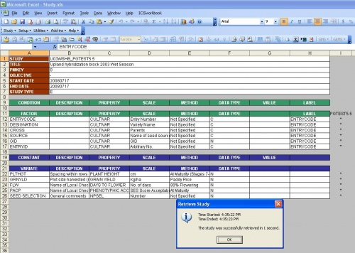
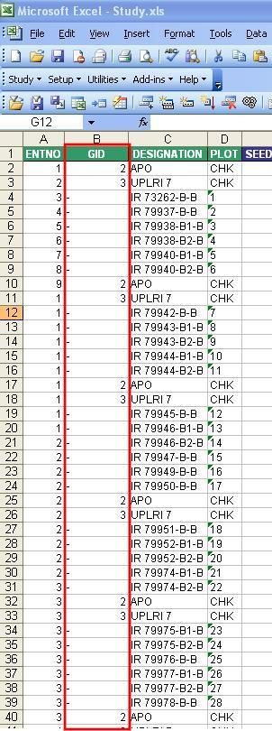
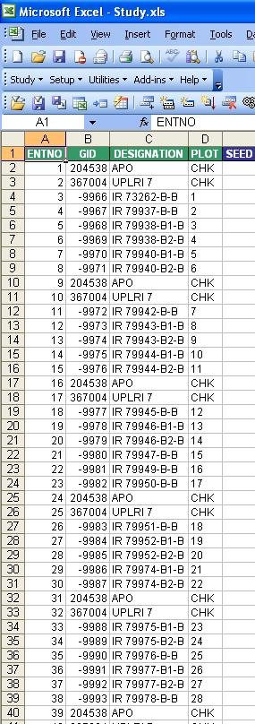
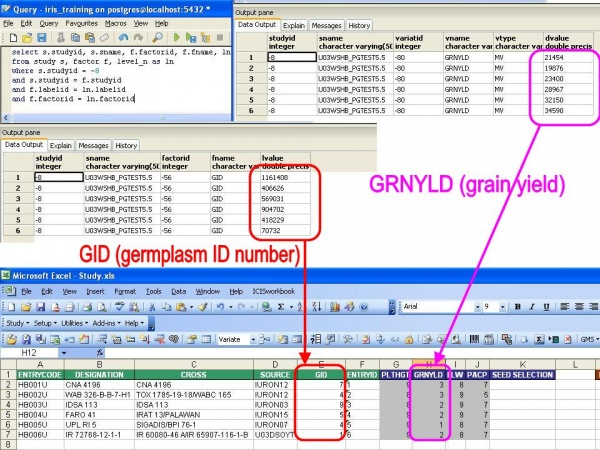

ICIS 5.5: Postgresql as Local GMS, Local DMS, and IMS
From ICISWiki
Contents
|
Setup
Local GMS,Local DMS and IMS in Postgresql (v8.0; all three are in one database). Central DBs are in MS Access.
ICIS Schema version: 5.5 (Crop: Rice)
Testing procedure based on TDM Breeders' Training Course materials (v5.4)
ODBC Driver setup for "LOCAL-IRIS-TRAINING-PG-WIN-LOC" (local IRIS training PostgreSQL database on local machine):
Workbook 5.5.1
Creating a Workbook file from a germplasm list
Add-ins --> Import SetGen List
- Select study U03WSHB_TEST
Result=OK
Setup Description Sheet
Provide basic info for study and setup the variables
- Name study as "U03WSHB_PGTEST5.5"
- Specify start date
- Specify end date
- Specify study type: E (for experiment)
- Add 5 rows under "Variate" section: PLTHT, GRNYLD, FLW, PACP, SEEDSEL.
- Define the ontology for the newly-added variates: click Setup > Variable section > Express setup
- On the Variable Express setup form, select "Property first"
- "Use" menu:
- Click on PLTHT cell
- Click Use > Existing
- Click on SEEDSEL cell
- Click Use > Existing
- "Custom Setup" menu
- Click on "FACTOR" section
- Click Setup > Variable Section > Custom Setup
- "Define Variables" form pops up
- Select "FACTOR" on the dropdown list at the upper left corner of the form
- In the listbox immediately below, select "CROSS".
- Change the scale of CROSS from "SES Code Variety Group" to "Parents"
(Do the same for VARIATE section; make specific adjustments)
Result=OK
Setup Observation Sheet
- Adjust observation sheet based on description sheet contents
- Click Setup > Observation Sheet
- Observation sheet matches variables defined in description sheet
- Adjust description sheet based on observation sheet contents (if changes were made)
- Delete ENTRYID column
- Place the column GRNYLD before PLTHGT
- Click "Setup > Description Sheet"
- Specify the first variate through a dialog interface
- Fill in the data for the variates
Result=OK
Load study data
- Click Study > Load
- Data Validation mode:
- In the training exercise, the LABELs are missing and PARENTS scale does not exist
- Erroneous cells are highlighted
- Fix the errors
- Try to load the study again (click Study > Load)
Result=OK (This newly loaded study is assigned with STUDYID = -8. Study successfully loaded)
Check the underlying database if the study was loaded.
Use this SQL to check the GIDs of the study entries:
select s.studyid, s.sname, f.factorid, f.fname, ln.lvalue from study s, factor f, level_n as ln where s.studyid = -8 and s.studyid = f.studyid and f.labelid = ln.labelid and f.factorid = ln.factorid
Use this SQL to check the variates of the study entries. Example: variate is GRNYLD (grain yield)
select s.studyid, s.sname, v.variatid, v.vname, v.vtype, dn.dvalue from study s, variate v, data_n as dn where s.studyid = -8 and s.studyid = v.studyid and v.variatid = dn.variatid and v.vname = 'GRNYLD'
Retrieve factors & variates of study
- Click Study > Retrieve > Factors & Variates
- Select study U03WSHB_PGTEST5.5 (the study we loaded in the previous section; this study is in the local database)
 Result=OK (Study successfully retrieved)
Retrieve study data
Case 1: Previously loaded study (MS Access as local at time of loading)
- IRIS local database [Training.MDB (with existing studies)] converted to PostgreSQL
- Click Study > Retrieve > Dataset. Form appears:
- Select study UWS03-01
| Postgresql as local database ("-" (dash) is the only thing displayed when GID is negative, and only one digit is displayed for positive GIDs) | MS Access as local database |
|---|---|
|  |  |
Result=Error (data truncated)
Case 2: Newly loaded study (PostgreSQL as local at time of loading)
- Click Study > Retrieve > Dataset
- Select study U03WSHB_PGTEST5.5 (the study we loaded in the previous section; this study is in the local database)
...if we look at the data for the retrieved variates... 
Result=Error (data truncated)
Installation Diagnostic Tool 5.5.1
Configuration Test
(Test ODBC connection)
Database Test
SetGen 5.5.1
HB List
Create list
Fill with...
Naming Convention form pops up:
"Entry Code" column is renamed to "Sequence number":
Save the list
Export as XLS Excel File
List --> Export as --> XLS Excel File:
Resulting Excel file:
F1 List
Create list
Listname: U04DSF1_TEST
Generate crosses
- Click "+" button
- Use list U03WDHB_TEST
- Select Cross Name as name type; specify crossing location
- Use naming convention: "IR" as prefix, "90599" as start no.
Fill with...
- Right click on "Entry code" column
- Select "Fill with Sequence"
- Set "P" as the Prefix, "1" as the Start No, leave the end constant blank; check (Include Leading Zeros) and set numeric field width to 3
Save the list
Export as XLS Excel File
F2 Nursery
Create list
- Open the F1 list (select U04DSF1_TEST) in the Browse Window
- Select List>New>List from the List menu.
- Enter the list name: U04WSF2_TEST
- Enter the title: Upland F2 nursery for 2004 Wet Season (TEST)
- Select list type: F2
Derive lines
- Tag all lines in F1 list
- Click Derive lines button ("-").
- Select "207 Random Bulk" as the method
- Select "Derivative Name" as the name type
- Source section: check "List name" and "Entry code" checkboxes
- Complete date and locations section.
- Click OK to all.
- An information window displays notifying the user that a germplasm with the same name was found.
- Select "Add another germplasm with this name" to add the same germplasm name but generate a different GID to the list.
- Click "Ok to All".
Save the list
Export as XLS Excel File
DMS Retriever 5.5.1
InTrack 5.5.1
Reserving of seed stock for HB List
View inventory information
- Start Setgen from Launcher, double-click on U03WSHB from the List Selector.
- Tag all items in the edit window to view inventory.
- Right-click on the white space and select <View Inventory> on the pop-up menu.
Reserving seeds
Mark seeds to reserve
- Tag all the items in the inventory details section of the Inventory Tracker window
- Right-click on the white space and select <Reserve> on the pop-up menu. The Transaction window will display on the screen.
Transaction window - Reserve
- Encode on the space provided for each item the number of units to reserve, fill in commitment date of the reservation and any comment on the reservation being made.
Changes are reflected in the underlying PostgreSQL database:
Depositing of Seed Stock for F5 List
Create lot location for the F5 list
Select list
- Double-click list U03WSF5A
- Right-click on the inventory details section of the Inventory Tracker window
- Select <Add Lot> from the pop-up menu
Specify lot location
- Click button with elipses "..."
- Select <Short Term> on the Collection drop-down list
- Select <ST, Tray No. 998> on the Tray drop-down list
- Click on the <OK> button to close the window and update the location field on the inventory details section.
Specify inventory units, comments
- Select <Packet> on the Inventory Units drop-down list.
- On the Comments field, type “lot created for Postgres test”
Save lot information
- Click on the <Save> button on the toolbar to update the database.
Deposit seed stock for the F5 list
- Tag all the items in the Inventory Details section.
- Right-click on the white space and select <Deposit> on the pop-up menu.
- The Transaction window (Deposit) displays on the screen.
- Encode the number of units to deposit, commitment date of the deposit and any comment on the deposit being made.
- Click on <Ok> to save changes.